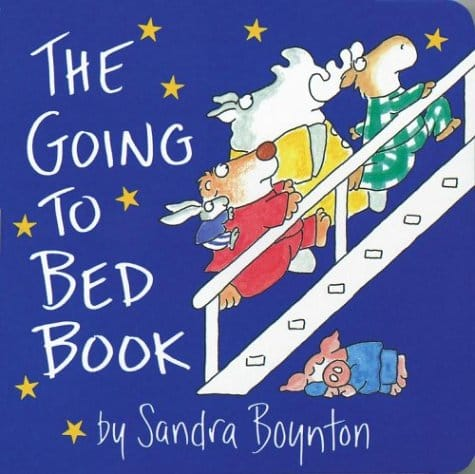
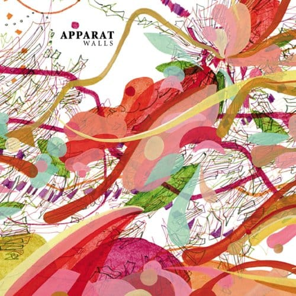

Today screensaver
Нашел сегдня отличный минималистичный скринсейвер. Ну, а для ценителей глючный из Эшера :)
Нашел сегдня отличный минималистичный скринсейвер. Ну, а для ценителей глючный из Эшера :)

There are a lot of failures but most of them are minor ones.

А вот еще супер-штука!

Безумно классная интерактивная книжка для айфона/айпада. Прусь (кажется даже больше Тимы!) в ней совершенно от всего: текста, картинок, от того даже, как чувак ее читает :) Очень, очень классно!
Chandler: Y'know what else I can't believe? I had to kiss Phoebe and Rachel every time I left a room, I mean it's too bad they didn't see us having sex.
Monica: Do you know anything about women?
Chandler: No.
Monica: That's all right.
Chandler: Okay. (They kiss again.)
Надо смотреть конечно же. Это одна из самых прикольных серий :)

А я вот не помню говорил или нет, но это совершенно же офигительный альбом! И он реально такой, как нарисовано на обложке :)
Monica: Ross, how long have you been planning this wedding? Ross: I don't know. A month? Emily has probably been planning it since she was five!
Гениальный сериал :)

Неожиданно :)